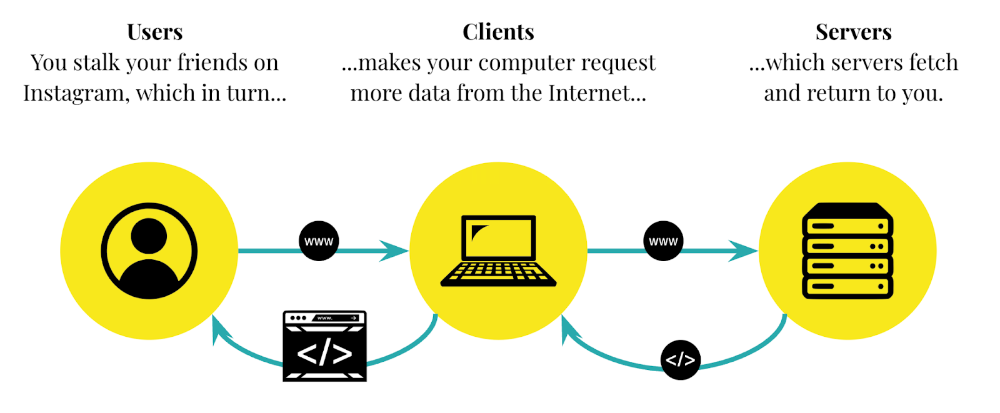

Welcome to the Internet:
Home
What is the internet?
A brief overview on how the internet works
The internet is a network that connects billions of computers and devices worldwide. It enables people around the world to connect with eachother through websites, email, social media, and more. It is made up of a "core" and an "edge". The edge is the devices that we use directly (such as computers or phones) and the core is all the connections in between. The internet is built on protocols, which are standards for using the internet. They allow devices worldwide to communicate in one unified way.The internet is used by the World Wide Web to give users access to websites. Email is another important service, allowing users to send written messages or files through the internet instantly. Instant messaging allows people to communicate conveniently and in real-time, in a conversation-like manner. File transfer makes it possible to move larger amounts of data, like images, software, or videos, bewteen computers.